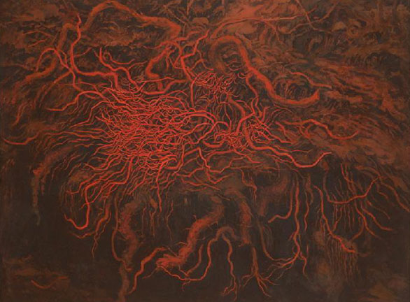

전시와 프로그램
공지사항
서울시립미술관 2022 신진미술인 지원 프로그램 1차 결과
2022-02-25
서울시립미술관 2022 신진미술인 지원 프로그램 2차 결과
2022-02-26
지식과 연구
미술관 소장품을 중심으로 한국현대미술사의 중요한 맥락을 밝히는 연구물을 생산하고 출판합니다.

SeMA 소장품
미술아카이브
모두의 연구실 ‘코랄’
상호창작 SeMA ‘P’